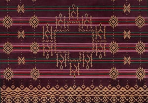
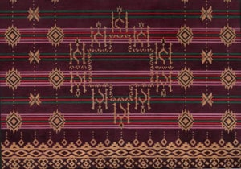

Ulos Antak-Antak digunakan ketika mengunjungi rumah duka atau melayat orang yang meninggal atau meninggal dunia,
dan memiliki makna dukacita. Ulos ini umumnya digunakan oleh perempuan.
Ulos merupakan simbol dari kesedihan dan duka cita. Ulos ini digunakan ketika
mengunjungi rumah duka atau melayat orang yang telah meninggal dunia.
Sumber: Buku Pesona Kain Ulos Danau Toba (Threes Emir & Samuel Wattimena)
Sumber: https://journal.unilak.ac.id/index.php/jib/article/download/9466/3754
 
